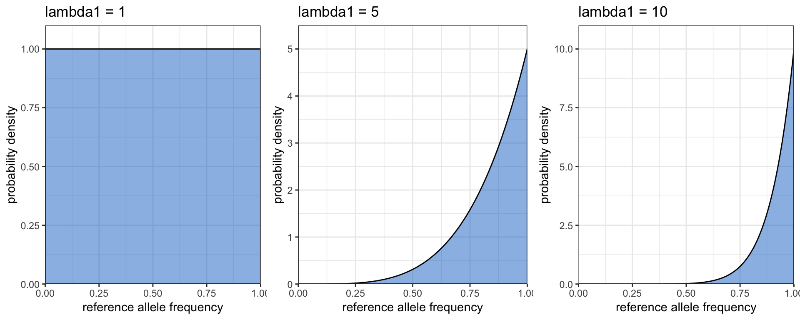

power-analysis-within-model.RmdOne of the major advantages of simulated data is that we can test the power of the program under different scenarios, hopefully allowing us to design field and lab studies that are powered to detect a signal. MALECOT is a Bayesian program and therefore power in this context is a Bayesian equivalent of traditional power, defined as the posterior probability of the true (simulated) value averaged over a large number of simulations drawn from the same model. For example, if the power to detect population structure is 0.9 then that means the true grouping will tend to have a posterior probability of 0.9.
For those interested in the headline results:
under realistic assumptions - including a skewed allele frequency distribution, 5% genotyping error and a mean COI of 2 per subpopulation - power analysis indicates that 100 independent loci are sufficient to detect population structure with ~95% posterior probability with 20 samples per subpopulation.
The following parameter ranges were explored when simulating data:
The three priors on allele frequencies correspond to the following distributions:

Simulated datasets were analysed by MCMC with the following parameters:
Each simulation parameter set was repeated 50 times, and results were averaged over simulations.